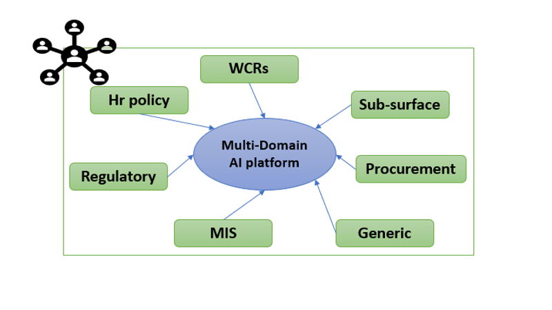
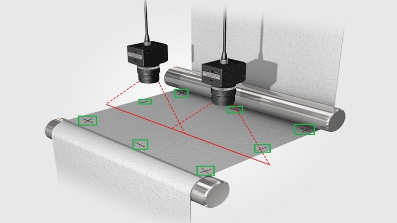
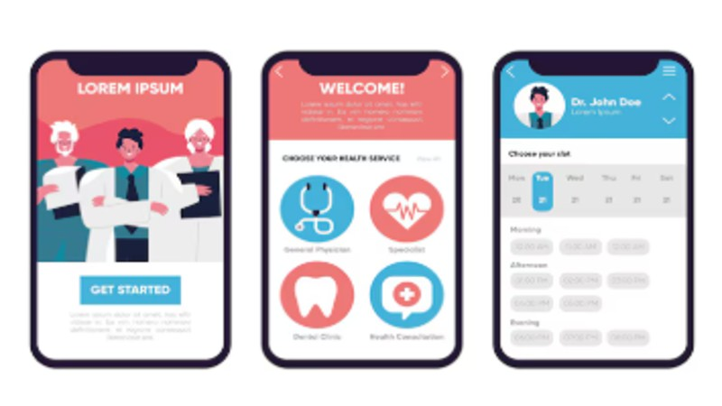
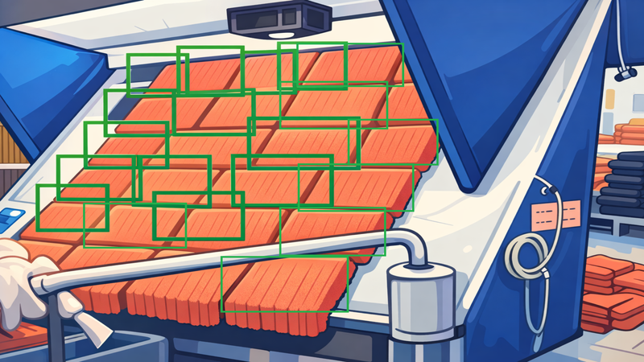
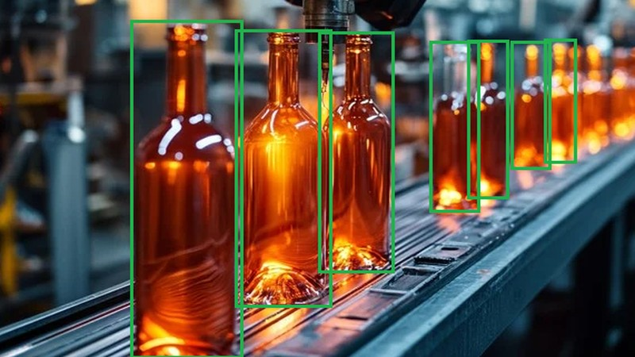
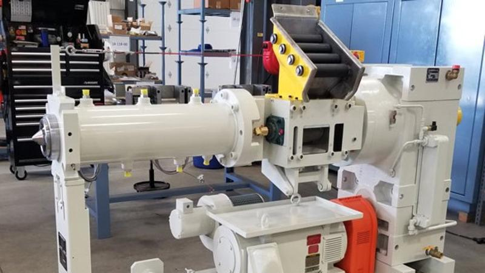
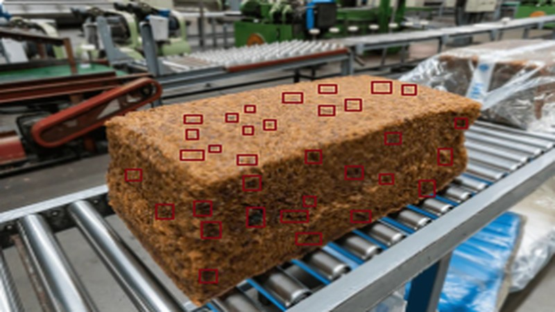

My Projects

GenAI Led Multidomain Query Platform
Developed a scalable machine learning pipeline to detect transactional fraud in real-time, reducing false positives by 15%.
Project Details
Automated Fabric Shrinkage Detection App
Automated data quality checks and fabric shrinkage analysis, improving reliability across enterprise systems.
Project DetailsAutomated Plank & Pipe Count Platform
Vision-based industrial counting system using deep learning models deployed at scale.
Project Details
GenAI Led Personalized Medical Health Bot
AI-powered conversational assistant for personalized medical insights and triaging.
Project Details
Realtime Automated Towel Count System
Computer vision system to count textile products on production lines in real time.
Project DetailsTelecom Permit-to-Work Automation App
Automated permit workflows for telecom field operations and compliance tracking.
Project Details
Realtime Automated Bottle Count System
High-accuracy object counting system for FMCG bottling lines.
Project DetailsTruck Appointment Booking & Process Management
End-to-end logistics booking system with queue management and analytics.
Project Details
Rubber Extruder Machine Health Prediction
Predictive maintenance system using sensor data and ML models.
Project Details
Processed Rubber Bale Defect Detection
Vision-based defect detection system reducing production losses.
Project Details